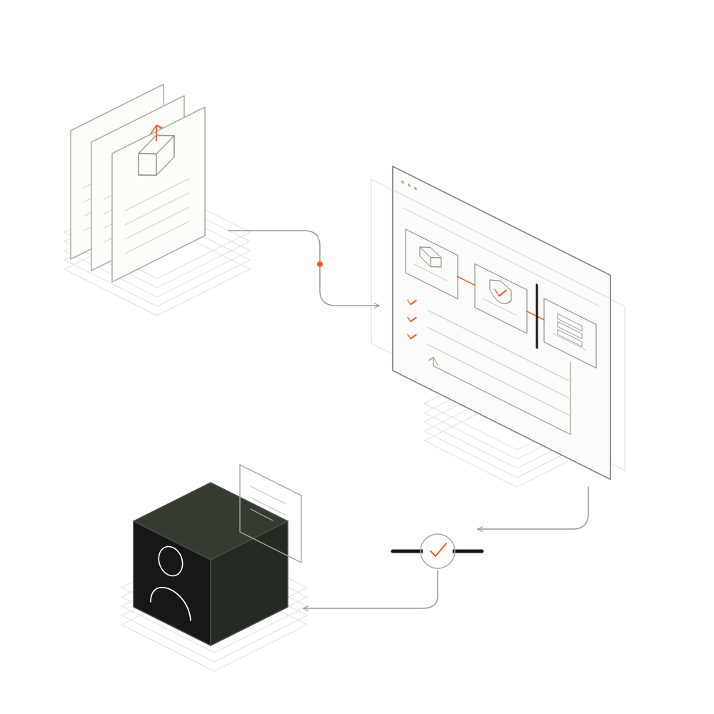
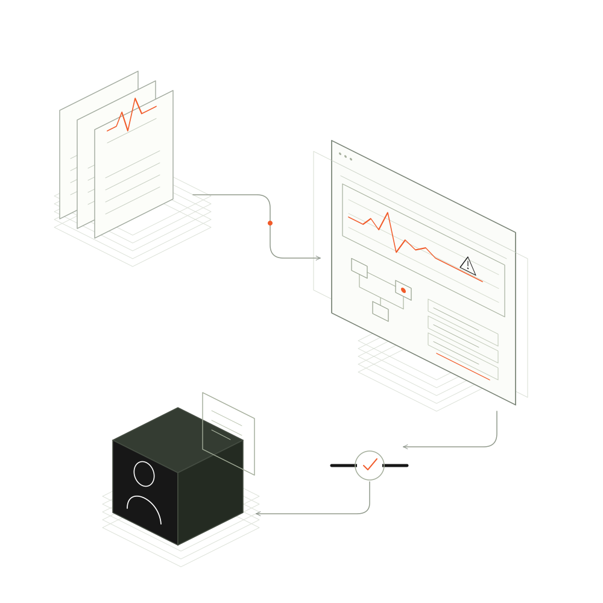
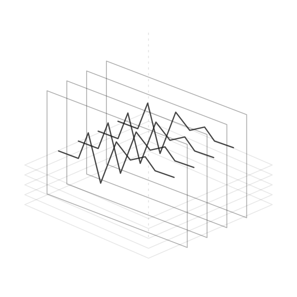
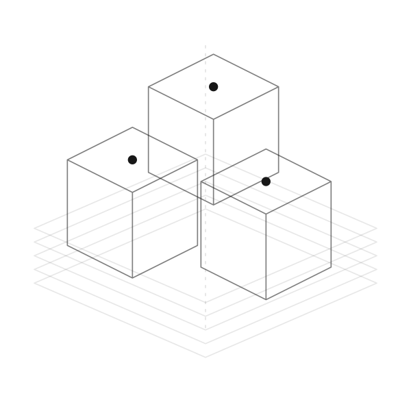
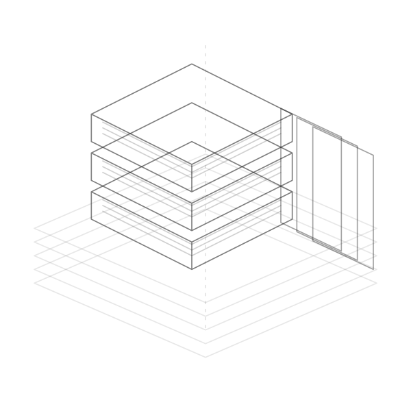

The framework behind the outcomes.
An AI-native delivery framework spanning the full software lifecycle, built and run by Nohvum engineers.
Clear requirements before delivery begins.
Enriches stories, drafts acceptance criteria and flags ambiguity for review.
- Product contextGoals and requirements
- BA AgentProposed stories and acceptance criteria
- Named engineerReview and approve
Human approval stays the boundary.
Changes with a clear path to review.
Implements agreed changes and prepares work for review.
- Story contextAgreed requirements
- Dev agentProposed change
- Named engineerReview and approve
Human approval stays the boundary.

Test every change against agreed criteria.
Generates tests from acceptance criteria, identifies coverage gaps and prepares test evidence.
- Acceptance criteriaExpected behavior
- QA AgentTest results and coverage
- Named engineerReview and approve
Human approval stays the boundary.

Release changes through a controlled pipeline.
Prepares delivery pipelines, assesses release risk and routes changes through approval gates.
- Release contextReviewed changes and deployment requirements
- DevOps AgentPipeline checks and release preparation
- Named engineerReview and approve
Human approval stays the boundary.

Keep reliability connected to human oversight.
Triages incidents, supports root-cause analysis and prepares postmortems with supporting evidence.
- Operational contextTelemetry, alerts and incidents
- SRE AgentIncident analysis and proposed response
- Named engineerReview and approve
Human approval stays the boundary.

Resolve issues. Retain what you learn.
Classifies tickets, drafts resolutions and prepares knowledge updates for review.
- Support contextTickets and previous resolutions
- Support AgentTicket classification and draft resolution
- Named engineerReview and approve
Human approval stays the boundary.

Your estate. A private knowledge model.
Product documentation
Product goals, requirements and acceptance criteria.
Release notes
Released changes, versions and delivery history.
Codebase
Source code, architecture and dependencies.
Decision records
Technical decisions, rationale and agreed trade-offs.
Data models & conventions
Schemas, naming standards and engineering patterns.
Tickets & incidents
Support issues, resolutions and operational learning.
Private context instance / client tenant
Application knowledge model
Your context, indexed and retained.
Certified agents
Work against your context.
Human approval gate
A named engineer reviews and approves the work. A person owns the result.
Delivered work
Reviewed changes and evidence.
Evidence returned to context
Client context stays within its agreed tenant boundary.
Nothing goes live unproven.
Reference set
Experts curate input-output pairs.
Blind evaluation
Agent runs without seeing the answers.
Expert scoring
Quality, fit and compliance.
- Certification gateNamed admin certifies, defers or fails.
In production
Live monitoring
Drift triggers re-evaluation. Renewal depends on evidence.
- Fails / remediate and re-run
- Drift detected / re-evaluate
Every cycle strengthens the next.
Delivery evidence builds retained knowledge. Updated agents pass through the same certification gate before returning to delivery.

Telemetry
Stories, PRs, tests, deployments, incidents and tickets feed one outcome store.

Agents re-calibrated
Outcome data tunes agents to your stack and conventions, through the same certification gate.
- Certification gateRe-evaluate and certify updated agents before the next delivery cycle.

Knowledge retained
Decisions, fixes and context stay in the framework, preserving knowledge between delivery cycles.
Configurable
AI-SDLC autonomy.
Choose how much AI does.
Accountability stays.
AI use that fits your environment.
Before implementation, we agree which tools and data sources may be used, where code and data can be processed, who approves changes, and what evidence is retained.
We align with your access controls, delivery pipeline and engineering review process.
See how the framework
fits your team.
Start with your systems, your priorities and the outcome you need.